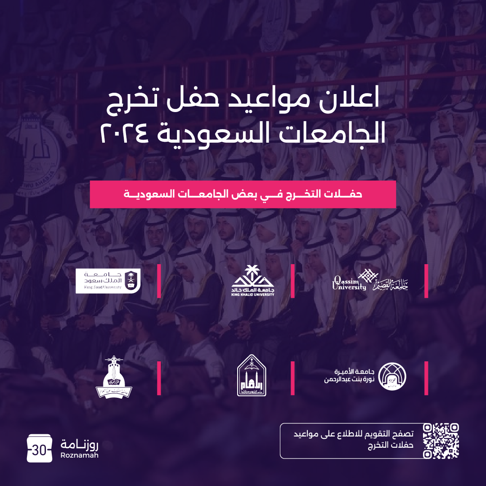
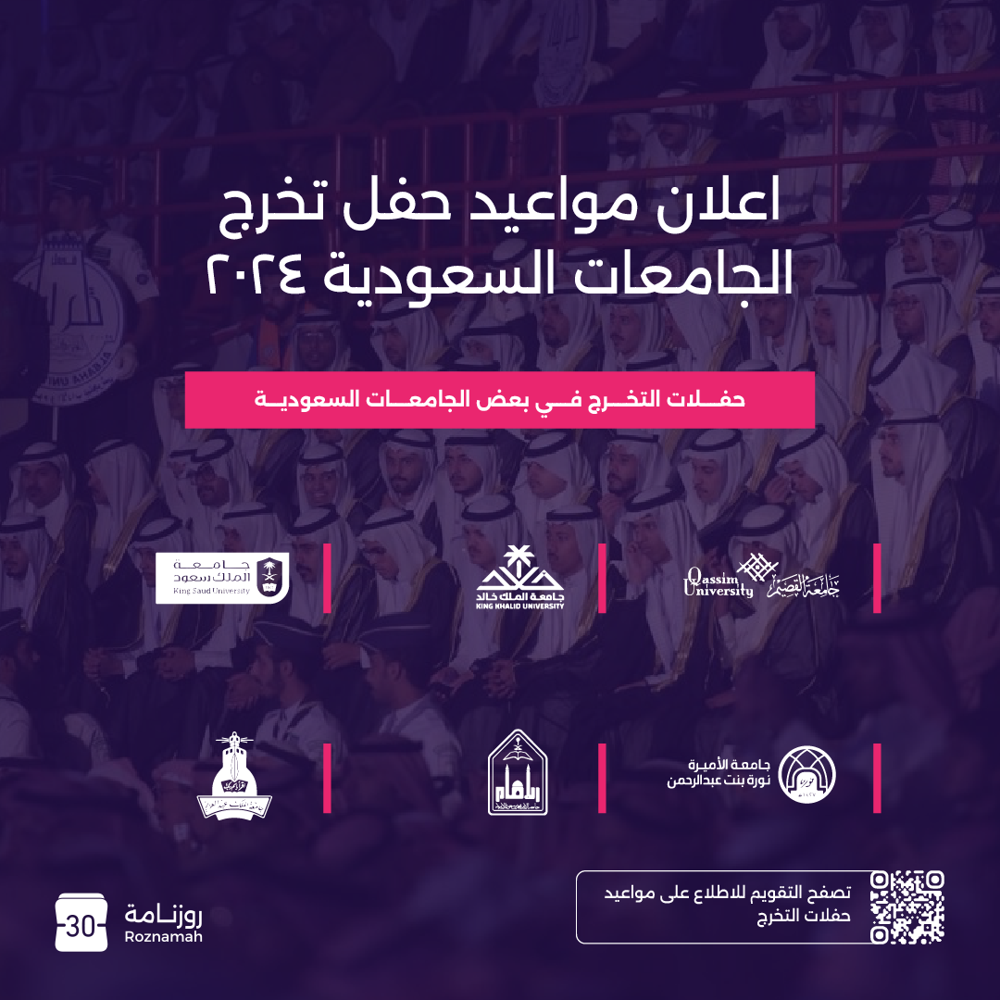

Open to immediately work.
Hello I'm
Lama Almushyqih
Frontend Developer and Creative Graphic Designer
I bring ideas to life with design and code. Passionate about elegant UIs and clear communication.
Skills
- üé®
Illustrator
Technical - üñåÔ∏è
Photoshop
Technical - üìä
Excel
Technical - üåê
HTML & CSS
Technical - üêç
Python
Technical - üöÄ
Creativity
Soft - ü߆
Adaptability
Soft - ü§ù
Team Work
Soft
Projects
Jareed Project, Qassim
2025
Tic-Tac-Toe Game, Qassim
2025
Mosque Data Management System, Qassim
2025
TeckLine Project, Qassim
2024
My Works - Design Showcase


 



Education
Qassim University, Qassim
Bachelor's Degree in Computer Science
Expected Graduation: 2025
Experiences
Raqi Wa Emar, Riyadh
IT Administrator, 03/2024 - Present
College of Computer, Qassim University, Qassim
Graphic Designer, 01/2025 - Present
Roznamah, Qassim
Graphic Designer, 04/2024 - 07/2024
Languages
Arabic (Native)
English (Intermediate)
All rights reserved © Lama Almushyqih